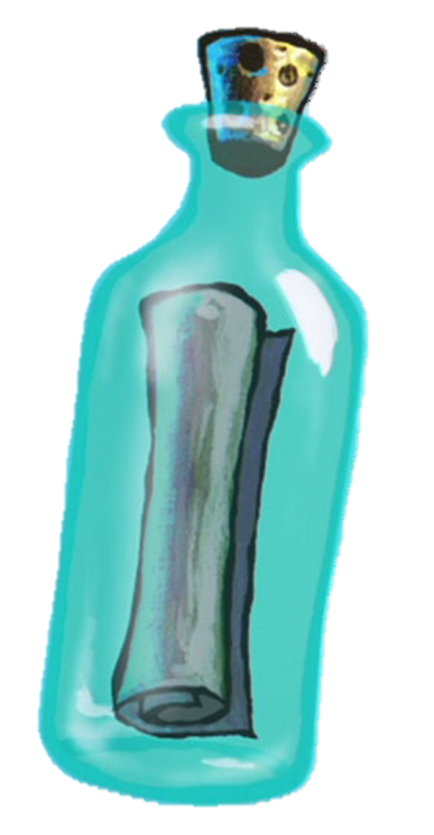

Im make Krabber Patterys

Secret Formula

I am here to bring upon a statement that causes a lot of controversy among the rick and Morty fanbase, that I in fact understand what Rick and Morty. unlike all of you foolish people that watch the show for laughs and plot. Rick and Morty is a show for smart people that understand the concept behind the animation and laugh. I have watched the show many times as I may recount around 14 times in the span of 1 to 2 years and I caught a lot of hidden references that went over average people's heads like take for example, "Evil Mortys Speech" in his speech he talked about violence among the ricks and mortys that fight against each other due to there roles as ricks and mortys."The division I see is between the Ricks and Mortys that like the Citadel divided, and the rest of us. I see it everywhere I go. I see it in our schools. Where they teach Mortys we are all the same, because they’re threatened by what makes us unique. I see it in our streets. Where they give guns to Mortys.So we’re too busy fighting each other to fight real injustice. I see it in our factories. Where Ricks work for a fraction of their boss’ salary, even though they are identical and have the same IQ. The Citadel’s problem isn’t homeless Mortys or outraged Ricks. The Citadel’s problem is the Ricks and Mortys feeding on the Citadel’s death...But I’ve got a message for them, from the Ricks and Mortys keeping it alive" I see this being used in the Presidental election because it shows how divided our world has become (Rick and Morty universe) and to show we all matter even the last rick or Morty that exists. so in conclusion all of you, foolish mortals don't understand rick and Morty at all because you all are to focus on the animation and the laughs. I grieve for your lack of knowledge of this godly show we call "Rick And Morty".
Kontakta mig